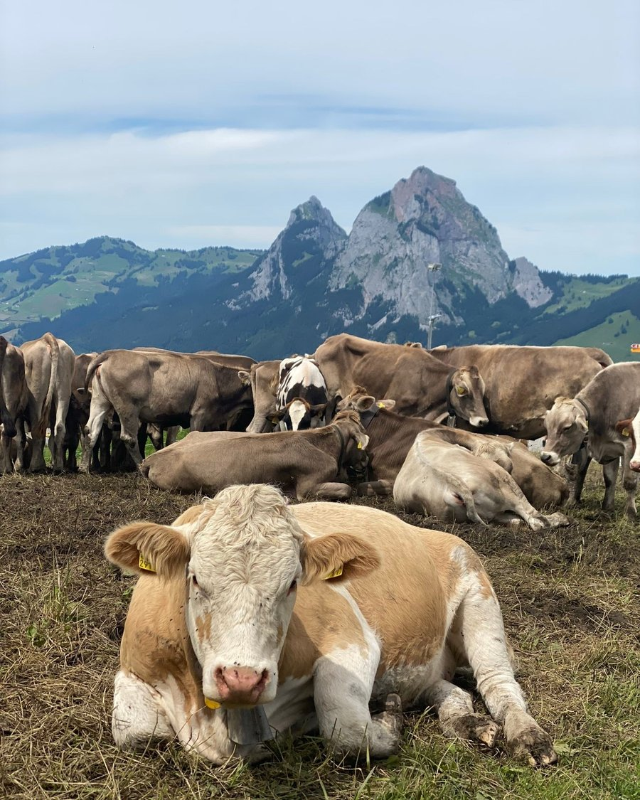

Hemberg & Hirschberg
In August 2003, the Swiss village of Hemberg had a problem: residents living near a newly installed antenna were reporting sleeplessness, headaches, trouble concentrating — enough of a pattern that the Mediation Authority for Mobile Communication and Environment (OMK), together with Swisscom, agreed to bring in BioGeometry as an experimental harmonization project. What followed wasn’t a quiet clinical trial — it was tracked with a resident questionnaire. Sleep improved. Headaches eased. People reported more energy. And the village noticed something else entirely: birds and bats that had disappeared from the area came back.

Worth saying plainly: this was a small, self-selected group of residents surveyed before and after — not a blinded clinical study — and the researchers said as much themselves, calling for a larger, more rigorous follow-up. But for the people living there, the change was real enough to report, and real enough for the canton to try it again.
Two years later, in May 2005, the nearby village of Hirschberg got its own version of the same treatment — this time commissioned directly by the local government rather than through mediation. Nobody was tracking livestock health going in; it wasn’t part of the study design. But residents noticed something anyway, and by July 2008, two local papers were reporting it: the cows in the area had stopped having miscarriages, and people were back to sleeping through the night. It was never measured — no baseline, no vet records — just an outcome real enough that the local press covered it on its own.
Source: Mediation Authority for Mobile Communication and Environment (OMK) / Swisscom-commissioned BioGeometry study, Hemberg, Switzerland, August 2003; resident questionnaire conducted by Dr. med. Yvonne Gilli, autumn 2004.
Source: Local government-commissioned BioGeometry study, Hirschberg, Switzerland, May 2005; livestock outcome reported in the Appenzeller Zeitung and Tagblatt, July 2008.
BioGeometry® shapes and Wi-Fi exposure in animal models
Two peer-reviewed studies — published in 2018 and 2019 — looked at what prolonged Wi-Fi exposure actually does inside a living body, and whether BioGeometry® geometric forms could reverse it. The results were measurable, specific, and could not be attributed to placebo.
Rats exposed to Wi-Fi radiation showed rising cellular stress, declining antioxidant defenses, and measurably reduced levels of melatonin, dopamine, and serotonin. Anxiety behaviors increased. Spatial memory deteriorated. When BioGeometry® forms were introduced into the same environment — with the radiation source unchanged — every one of these markers reversed, returning toward normal ranges.
What the studies were measuring, in plain language, is the same short list that shows up in every conversation about modern life: sleep that doesn’t restore, mood that sits slightly off, a mind that feels slower than it used to. These aren’t complaints without a cause. In rats — creatures that have no opinions about geometric forms and no capacity for placebo response — the cause was measurable, and so was the correction. That’s not a small finding. It’s a reason to take the question seriously.
Citations:
Sharaf, N.E.; El-Sawy, M.S.; Ahmed, H.H.; Metwally, F.M.; Hegazy, N.M.; El-Mishad, A.M. Bio-geometrical shapes: A new option for protection against neurodegenerative insult of Wi-Fi radiation. Bioscience Research, 15(3): 2481–2488. 2018.
Sharaf, N.E.; Galal, A.F.; El-Sawy, M.S.; Shalby, A.B.; Sayed, A.H.; Ahmed, H.H. Role of designed Bio-Geometrical forms in antagonizing neurobehavioral burden of Wi-Fi radiation: Evidence-based experimental study. Biomedical & Pharmacology Journal, 12(3): 1217–1234. 2019. DOI: 10.13005/bpj/1751
Virus C project
In April 1999, Dr. Taha Khalifa — Dean of the Faculty of Pharmacy at El Azhar University — put BioGeometry up against Hepatitis C, tested head-to-head against the pharmaceutical and alternative treatments already in use, in a pilot group of 300 patients. It won: a 90% reduction in the relevant liver enzyme markers, the strongest result of anything tested in the trial. Saudi Arabia’s Orbit Satellite Channel carried the announcement, and researchers proposed a second phase — 3,000 patients — to build on what the pilot had shown.
Source: Dr. Taha Khalifa, Faculty of Pharmacy, El Azhar University, Cairo, April 1999.
Poultry project & Nutrinor
At Ain Shams University, researchers raised two flocks side by side — one on the standard regimen of antibiotics, vaccines, and hormones, the other on nothing but BioGeometry’s environmental protocols. The unmedicated flock didn’t just keep pace. They outgrew the medicated birds — 1.85 kg, against 1.5 kg for the conventional flock, in the same stretch of time. No drugs. No hormones. Just a different environment.
Between August 2013 and October 2014, Nutrinor Coopérative in Quebec ran an experiment most poultry farms wouldn’t dare: raise nine consecutive batches of chickens — more than 150,000 birds — without a single antibiotic or anticoccidial, using BioGeometry’s methodology instead. The mortality rates held, batch after batch, matching or beating the antibiotic-treated flocks, with comparable weights and growth times. Then, to be sure it wasn’t a fluke of the experimental henhouse, they proved it again at full commercial scale — two more batches, 45,000 birds, same results, standard production henhouse. Nine consecutive successes doesn’t happen by accident.
Source: Prof. Dr. Ahmed Hussein, Ain Shams University, published in Masharef magazine.
Source: Letter from Nutrinor Coopérative to BioGeometry Canada, October 21, 2014 (Robin Boudreault and Chantal Bélanger).
Nutrinor — dairy cattle
Alongside the chicken research, Nutrinor also watched something quieter: somatic cell counts in its dairy herd — the standard measure dairy farmers use to gauge inflammation and infection in the udder, most often from mastitis. Through 2013 and 2014, as BioGeometry’s environmental solutions went in, those counts came down. The source document calls this preliminary research, not a closed study like the poultry work — but the direction was the same: less infection, healthier udders, across the herd.
Source: BioGeometry Canada, “Cow Milk Leukocyte Count Research — Preliminary Research with Nutrinor Cooperative (Quebec, Canada),” 2014.
Lake Guenevere restoration
For three decades, the fourteen-acre Lake Guenevere in St. Cloud, Florida had been chemically sprayed for algae and weeds almost every month — long enough that several feet of decomposed sediment had settled on the lake bottom, and the smell had become part of daily life for the Camelot community around it. In December 2014, the homeowners’ association agreed to stop the chemicals entirely and let BioGeometry Canada try something different.
The work wasn’t a single placement and walk-away. Twice in 2015, the shape placed in the lake was physically disturbed — once moved by a fisherman, once removed entirely by a kid in a boat — and each time, the team had to come back, track down what had shifted, and reset it before the lake’s condition held again. That’s not a flaw in the process; it’s the same measure-adjust-remeasure rhythm behind everything else on this site. A living space doesn’t stay solved once and for all — it needs checking back in on, especially when something in the environment changes.
By September 2015, the active work was done. From there, the lake’s improved condition — clearer water, no more odor, more fish and birds — held on its own for most of another year, confirmed in person along the way by an Environmental Scientist IV from the St. Johns River Water Management District. The community saved roughly $8,000 in treatment costs they no longer needed to spend.
Chemical spraying didn’t resume until August 2016 — eleven months after BioGeometry’s active work had concluded — and not because the water quality slipped. It came down to aesthetics: some residents wanted fewer lily pads, which water-management staff and the project report both note are actually beneficial to a lake’s health, not a sign anything had gone wrong.
Source: “Lake Guenevere BioGeometry Environmental Harmonization Project,” BioGeometry Canada, Inc. and Apex Engineering, Inc., March 2017; letter from the Camelot Homeowners Association, October 31, 2016.
Building materials & indoor air
Egyptian researchers built a stress test out of a rat’s own cage: house adult male rats for twelve weeks in cages made from ordinary construction materials — red brick, cement, ceramic tile, interior paint, the same materials most homes are built from — and see what the indoor air actually does to a body over time. The rats in unprotected cages showed elevated thyroid hormone levels and real tissue damage in their lungs, liver, and kidneys. Rats housed in identical cages fitted with BioGeometry balancing elements came back close to the health of rats living in plain, untreated cages. Same materials. Different outcome.
Source: Sharaf, N.E., El-Sawy, M.S., Metwally, F.M., El-Khayat, Z., and Farag, A., “Protective Role of BioGeometry Against Indoor Pollutants of Some Egyptian Building Materials in Adult Male Rats,” World Journal of Medical Sciences, 2014, 10(3): 337–346.
Disclaimer
BioGeometry® is not a substitute for medical care, diagnosis, or treatment. The studies and projects described here reflect outcomes reported in their original sources; individual results vary, and none of this is intended to diagnose, treat, cure, or prevent any condition. All services are educational and environmental in nature.